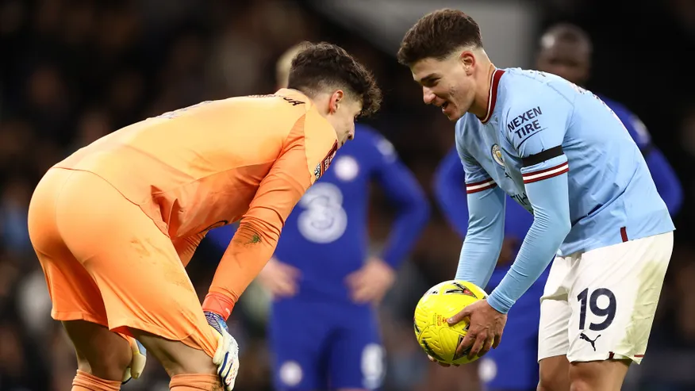

Sala de Prensa
Medios

En Argentina, en qué canal dan y a qué hora juega Julián Álvarez en Manchester City vs Wolverhampton
GOAL - 21/01/2023
Casi llegando a su cierre, la fecha 21 de la Premier League tiene un duelo vital para la parte alta [...]
Visitar NoticiaEl gol de Julián Álvarez en su vuelta a la titularidad en Manchester City
TUCUMÁN NOTICIAS - 21/01/2023
Tras la obtención del Mundial de Qatar 2022, Guardiola le daba pocos minutos a la "Araña", pero este jueves fue [...]
Visitar NoticiaCon gol de Julián Álvarez, Manchester City venció 4-2 a Tottenham por la Premier League
FUTBOL ARGENTINO - 18/01/2023
Tottenham lo ganaba 2-0 pero apareció Julián para poner el descuento, luego Haaland para empatarlo y con un doblete de [...]
Visitar Noticia

¿Qué le dijo Kepa a Julián Álvarez? El arquero del Chelsea quiso jugar con la mente de la Araña en un penal para el Manchester City
GOAL - 09/01/2023
El delantero argentino opinó sobre la actitud de Kepa en el penal y habló de su regreso al equipo de [...]
Visitar Noticia